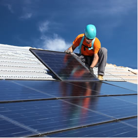
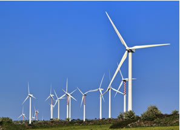
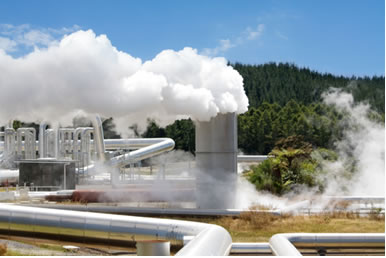
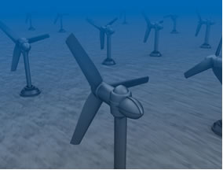
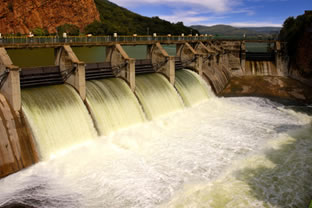
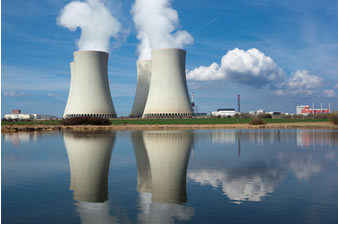

Energia Limpa e Acessível
Os combustíveis fósseis são os meios de geração de energia mais utilizados atualmente.
Eles incluem o petróleo e seus derivados (gasolina, óleo diesel etc.), o gás natural, o xisto e o
carvão mineral. Todos esses combustíveis foram gerados há milhões de anos pela decomposição
de seres vivos, animais e/ou vegetais.
Por isso, os cientistas estão cada vez mais pesquisando novos modelos energéticos.
Um modo de geração de energia mecânica ou elétrica é considerado limpo se não liberar
substâncias poluentes para o meio ambiente. É bem verdade que até o momento não se descobriu
nenhuma forma de geração de energia que não cause nenhum impacto na natureza; entretanto, no
caso da energia limpa, esse impacto restringe-se à região da construção da usina.
Tipos de Energia Limpa:
Energia Solar

"Instalação de painéis solares fotovoltaicos de energia
alternativa no telhado"
Recebemos do Sol uma quantidade 10 mil vezes maior de energia do que a necessária para a população
mundial em um ano. Assim, toda essa energia pode ser aproveitada por meio de painéis com células
fotovoltaicas. Essa energia térmica captada pode ser usada de modo direto em residências,
como para aquecer a água do chuveiro ou aquecer ambientes, e pode também ser usada indiretamente
para a geração de energia elétrica.
O custo total de instalação e projeto de um sistema de energia solar fotovoltaica
residencial é de aproximadamente R$ 12.800,00, considerando-se a utilização de um
gerador de 1,73 kWp instalado em uma residência com o consumo médio mensal de 186,3 kWh.
Energia Eólica

"Turbinas de energia eólica em Sicília, Itália"
Sua matéria-prima é o vento, que é captado por uma turbina de duas ou três pás, ou seja, hélices presas
em um pilar, chamadas de eólias. Seu rendimento depende
da rapidez e constância dos ventos na região,
o que requer uma análise desses dados
antes desse sistema de energia ser implantado.
As vantagens principais da energia eólica são que o impacto
ambiental é praticamente nenhum,
e o custo de geração de eletricidade é baixo.
Um sistema de energia eólica residencial custa entre R$ 10 mil e R$ 75 mil, sendo que,
somente a turbina eólica custa, em média, de R$ 2 mil a R$ 3.500 mil.
Energia Geotérmica

"Estação de usina geotérmica"
A 64 km da superfície da Terra existe uma camada denominada magma, em que a elevadíssima
temperatura ferve a água dos reservatórios subterrâneos. Assim, a energia geotérmica
baseia-se na captação do vapor gerado nesses reservatórios por meio de tubos e canos
apropriados. Esse vapor faz lâminas de uma turbina girar, e um gerador transforma a energia
mecânica em elétrica.
No Brasil, ainda faltam estudos que visem à exploração da energia
geotérmica para geração de eletricidade. O custo inicial de explorar e perfurar
entre três e cinco poços geotérmicos varia de 20 milhões a 30 milhões de dólares.
Energia Maremotriz

"Turbinas no fundo do mar para geração de energia maremotriz"
Esse tipo de energia é bem conhecido, sendo que ela é
proveniente do movimento das águas.
O seu rendimento é muito superior aos que foram
mencionados até aqui. Porém, os seus impactos
ambientais são imensos, incluindo destruição de ecossistemas, alteração de paisagens, alagamentos,
bloqueio nos rios e deslocamento da população que morava no local onde a usina foi construída.
O custo de construção e manutenção de uma usina de marés varia,
dependendo das características bi- ológicas, geográficas e geológicas do local.
Por exemplo, a construção de um sistema como a de Severn na Inglaterra,
ficaria em torno de US$ 15 bilhões.
Energia Hidráulica

"Usina hidráulica: energia gerada pela movimentação das águas"
Esse tipo de energia é bem conhecido, sendo que ela é proveniente
do movimento das águas.
O seu rendimento é muito superior aos que foram mencionados até aqui.
Porém, os seus impactos ambientais são imensos, incluindo destruição de ecossistemas,
alteração de paisagens, alagamentos, bloqueio nos rios e deslocamento da população que
morava no local onde a usina foi construída.
Em São Paulo hoje esse custo é de R$ 224,02 R$/MWh. Simulação feita na
plataforma “Quanto é gerar energia?” Há cenários mais baratos. Um cenário com 40% de
hidrelétricas, 20% de solar, 20% de eólica e 20% de térmica a biomassa demandaria um
investimento de R$ 994 bilhões e o consumidor pagaria 165,60 R$/MWh.
Energia Nuclear

"Uma usina nuclear sempre é instalada perto de fontes de águas naturais"
Apesar desse tipo de energia envolver altos riscos de contaminação, isso só acontece se houver
acidentes ou se o lixo atômico não tiver um tratamento e destino corretos. Mas se tudo
transcorrer bem, a energia nuclear é considerada limpa, pois não causa poluição
pela emissão de substâncias.
Segundo o estudo, o custo real da energia da
usina nuclear é de R$ 528 (MWh/megawatt-hora).
Energia Biomassa
"Os biocombustíveis têm como matérias-primas os óleos vegetais"
Inclui o uso de matéria orgânica, tais como restos de madeira, colheita, plantas,
alimentos, animais e algas. A biomassa é constituída principalmente por elementos
como carbono, hidrogênio, oxigênio e nitrogênio, estando o enxofre em menores proporções.
Esse material orgânico pode ser transformado em combustíveis sólidos, líquidos e gasosos.
Quanto a biomassa, o estudo aponta que gerar um megawatt-hora (MWh) pela
biomassa custa médios R$ 189,78 em caso de expansão de oferta de energia elétrica.